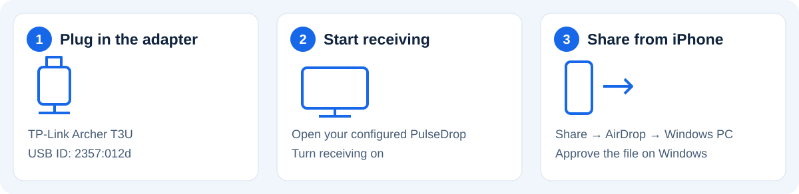
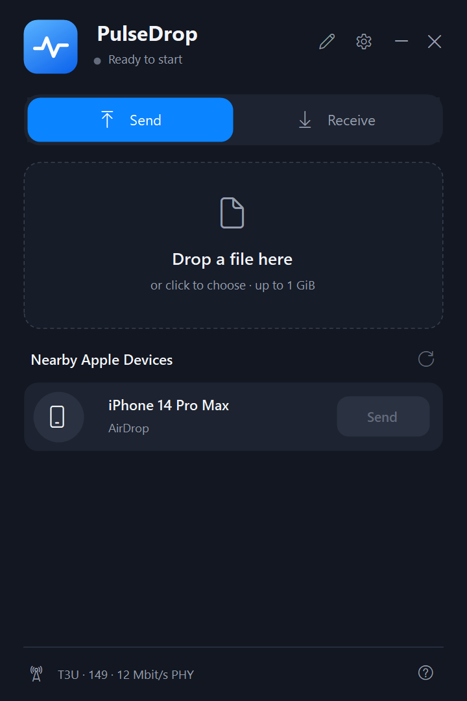
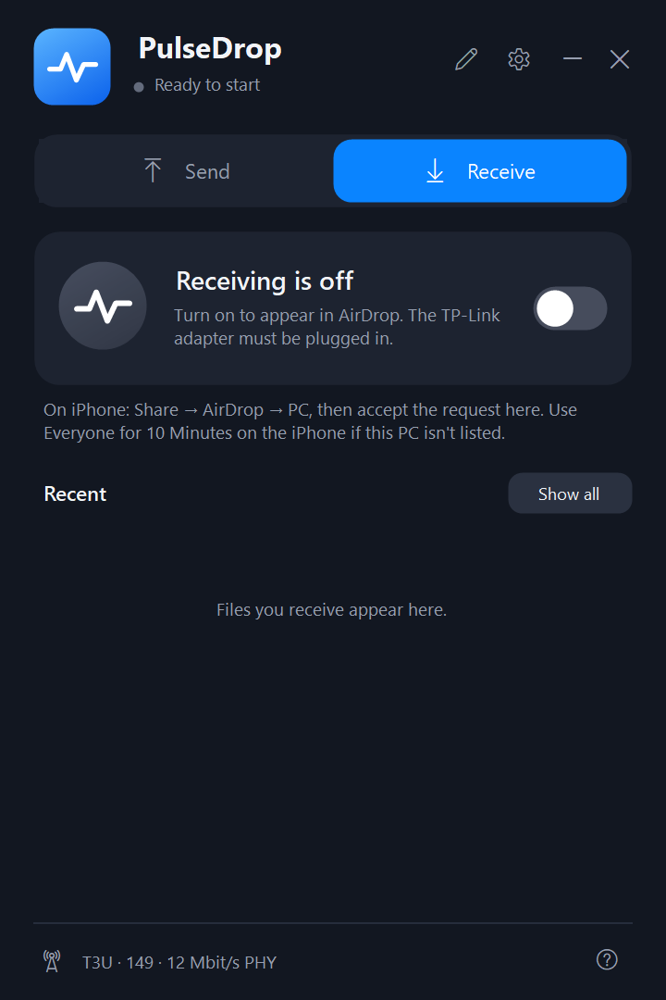

Developer preview · supported USB adapter required.
This needs a TP-Link Archer T3U with USB ID 2357:012d, Windows x64, working Bluetooth and administrator setup. Built-in Wi-Fi alone is not supported. Configuring the USB adapter takes it away from normal Wi-Fi use.
First, get ready
Plug in the supported adapter. If you have not configured it, close PulseIt and use Configure USB adapter from the Start menu, then approve the administrator prompt. Keep a separate internet connection available. Open PulseIt and turn receiving on.

iPhone → PC
- Open a photo, video or file on iPhone.
- Tap Share → AirDrop → Windows PC, or your configured PC name.
- Accept on Windows. Wait for completion, then open Received files.
PC → iPhone
- Unlock iPhone and set AirDrop to Everyone for 10 Minutes.
- Open Send in PulseIt and refresh devices.
- Choose a file, select iPhone and press Send.
- Accept on iPhone. Wait for completion.
If a device is missing
Keep both devices nearby. Unlock iPhone, refresh Everyone for 10 Minutes, reopen its AirDrop sheet and refresh PulseIt. Check receiving is on and the supported adapter is plugged in.
Use Bluetooth recovery only when you can tolerate a brief accessory disconnection. If Bluetooth itself has failed, a Windows restart may be needed. Leave experimental faster sending and channel matching off while testing.
Send screen

Synthetic demo data
Receive screen

Synthetic demo data
Before you rely on it
- Maximum transfer size: 1 GiB. Large videos can take several minutes and may pause. Keep the phone unlocked; do not stop receiving during a transfer.
- Contacts Only is unsupported. Confirm the intended device yourself.
- This build is unsigned. Current-build phone tests, sustained Bluetooth coexistence and clean-PC installation/restoration remain unqualified.
- To restore ordinary Wi-Fi on the TP-Link, close PulseIt and use Restore USB Wi-Fi driver from the Start menu.
- Diagnostic exports can contain personal names, addresses, file names and paths. Review and redact before sharing.